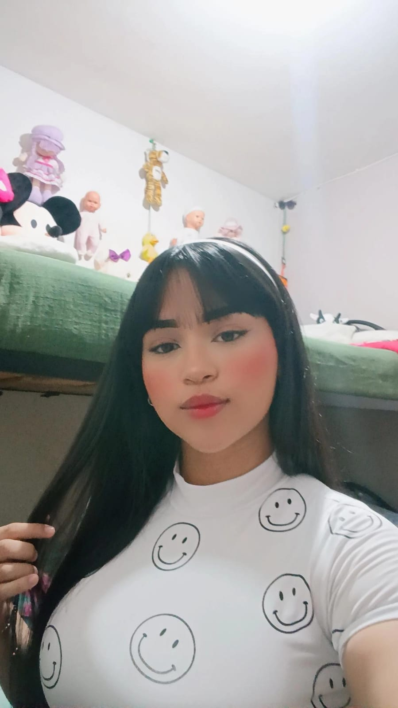

Laura Manuela

Soy una persona curiosa, creativa y con muchas ganas de aprender cosas nuevas cada día. Me gusta explorar diferentes áreas, desde lo académico hasta lo personal, y siempre busco maneras de crecer y mejorar. Disfruto compartir ideas, ayudar a los demás y encontrar soluciones prácticas a los retos que se presentan. Me considero alguien perseverante, responsable y con una mentalidad abierta, lo que me permite adaptarme fácilmente a distintos entornos y situaciones.
Santiago Molina
Me llamo Santiago Molina Muñoz, tengo 19 años y actualmente soy estudiante del SENA en la carrera de Análisis y Desarrollo de Software. Me apasiona la tecnología, la programación y el aprendizaje constante, ya que busco fortalecer mis conocimientos para convertirme en un profesional capaz de aportar soluciones innovadoras en el área del desarrollo de software.
Sergio Valencia
Mi nombre completo es Sergio Esteban León Valencia, tengo 17 años, amo los animales (principalmente felinos), me apasionan muchas cosas, pero principalmente la música y la tecnología. Soy una persona muy curiosa, me gusta aprender cosas nuevas y compartir mis conocimientos con los demás. Me considero una persona responsable, leal, creativa y con muchas ganas de crecer tanto personal como profesionalmente.
Elizabeth Mora
Hola, me llamo Elizabeth, tengo 18 años. Me gusta el arte, la programación, los árboles, la música, y el disfrutar de las cosas simples. Actualmente estoy estudiando en el SENA, haciendo una tecnología en análisis y desarrollo de software. Aspiro aprender mucho y ser buena en el desarrollo de la programación.